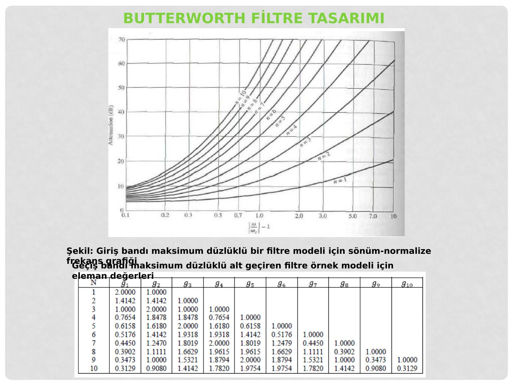

· EEM311
EEM311 Elektronik II: Filtre Tasarımı ve Filtre Çeşitleri Sunumu (Gizem Kahya, 2013)
EEM311 – Elektronik II · 15.05.2013 · 16.10.2026
Bu yazı, EEM 311 Elektronik II klasöründe 2014 güz dönemi tasarım ödeviyle birlikte saklanan, Gizem Kahya tarafından 2013'te hazırlanmış 28 slaytlık "Filtre Tasarımı" sunumunu aktarıyor. Sunum Başkent Üniversitesi dışından; kaynakçasında İTÜ Elektrik-Elektronik Fakültesi'nde yapılmış "RF Filtre Tasarımları ve Gerçeklenmesi" bitirme ödevi (Ramiz Erdem Aykaç), Mehmet Fatih Çağlar'ın Yüksek Frekans Tekniği ders notları ve Chris Bowick'in RF Circuit Design kitabı gösteriliyor; tablo ve grafiklerin çoğu bu kaynaklardan alınmış. Sunum büyük olasılıkla 2014 ödevindeki filtre soruları için kaynak olarak indirilmiş. Orijinal PowerPoint dosyası yazının sonunda indirilebilir.
Bu içerik üçüncü taraf bir kaynağa aittir; arşiv ve nostalji amacıyla kaynak belirtilerek paylaşılmıştır. Hak sahibinin talebi hâlinde kaldırılır.
Filtreler ve filtre çeşitleri
Filtreler, belirli frekanslarda çalışan ya da belirli frekansları engelleyen, amaca göre belirli bant genişlikleri olan yapılardır. Dört genel başlıkta toplanırlar:
- Alçak geçiren filtreler: Kesim frekansından düşük frekansları geçirir, yüksek frekansları zayıflatarak iletimini engeller. İdeal alçak geçiren filtrenin frekans cevabı dikdörtgen biçimindedir. LC tipi n parçalı alçak geçiren prototip, seri bobinler (K₁, K₃, …) ve paralel kondansatörlerden (K₂, …) oluşan bir merdiven devredir.
- Yüksek geçiren filtreler: Seri kapasiteler ve paralel bobinlerin kaskat dizilimiyle gerçeklenir; kesim frekansının üstündeki frekansları geçirir, altındakileri söndürür.
- Bant geçiren filtreler: İstenilen bant aralığındaki frekansları geçirir, diğerlerini engeller. Bant genişliği B = f_H − f_L.
- Bant durduran filtreler: Belirli bir bandı söndürür; şekil faktörü BW_c/BW = (f₄ − f₁)/(f₃ − f₂) (−3 dB ve −50 dB bant genişliklerinin oranı).
Not: Bant geçiren filtre slaytında merkez frekansı f₀ = (f_H − f_L)/2 olarak yazılmış; bu ifade bant genişliğinin yarısıdır. Merkez frekansı geometrik ortalamayla f₀ = √(f_H·f_L) (dar bantlı filtrelerde yaklaşık olarak (f_H + f_L)/2) bulunur.
Filtre tasarım metotları
LC filtre tasarımında iki kapılı devreler ve özellikle basamak (merdiven) tipi devreler kullanılır. Basamak tipi iki kapılı devrelerin iki önemli çeşidi simetrik T ve Π tipi devrelerdir. Sunumdaki tablo iki yapının parametrelerini karşılaştırıyor:
| T devresi (seri Z₁/2 – paralel Z₂ – seri Z₁/2) | Π devresi (paralel 2Z₂ – seri Z₁ – paralel 2Z₂) | |
|---|---|---|
| ABCD | A = 1 + Z₁/2Z₂, B = Z₁ + Z₁²/4Z₂, C = 1/Z₂, D = 1 + Z₁/2Z₂ | A = 1 + Z₁/2Z₂, B = Z₁, C = 1/Z₂ + Z₁/4Z₂², D = 1 + Z₁/2Z₂ |
| Z / Y parametreleri | Z₁₁ = Z₂₂ = Z₂ + Z₁/2, Z₁₂ = Z₂₁ = Z₂ | Y₁₁ = Y₂₂ = 1/Z₁ + 1/2Z₂, Y₁₂ = Y₂₁ = 1/Z₁ |
| İletim (karakteristik) empedansı | Z_iT = √(Z₁Z₂) √(1 + Z₁/4Z₂) | Z_iΠ = √(Z₁Z₂) / √(1 + Z₁/4Z₂) = Z₁Z₂/Z_iT |
| Yayılma sabiti | e^γ = 1 + Z₁/2Z₂ + √(Z₁/Z₂ + (Z₁/2Z₂)²) | aynı |
Filtre yaklaşım metotları
Butterworth filtresi
Geçirme bandı maksimum düzlüklü filtredir. Zayıflatması
A_dB = 10 log [1 + (W/W_c)²ⁿ]
W: istenen zayıflatma değerinin gerçekleştiği frekans, W_c: kesim frekansı, n: filtrenin derecesi (toplam L ve C sayısı). Derece arttıkça sönümlenme eğimi dikleşir (n = 2, 4, 6, 8 için karşılaştırma grafiği).
Chebyshev filtresi
Yüksek Q değerli filtrelerdir; geçirme bandında dalgalanma (ripple) yapma pahasına geçiş bölgesi daha diktir. Zayıflatması
A (dB) = 10 log [1 + ε² C_n²(W/W_c)], ε = √(10^(ripple(dB)/10) − 1)
C_n, n. dereceden Chebyshev polinomudur. n = 3 için Butterworth ve 3 dB dalgalanmalı Chebyshev cevaplarının karşılaştırmasında Chebyshev'in kesim frekansından sonra çok daha hızlı söndüğü görülüyor.
Bessel filtresi
Diğer filtrelere göre geçirme bandındaki zayıflatması fazladır, ama düzgün gecikme ve doğrusal faz cevabı verir.
Tasarım aşaması
Filtrenin derecesi belirlenirken kesim frekansı (f_c) ve belirtilen bir frekansta ne kadar sönüm olması gerektiği dikkate alınır: |f/f_c| − 1 değeri hesaplanır, ilgili normalize sönüm grafiğinde istenen sönümle kesiştiği nokta bulunur; bu noktaya en yakın (üstteki) eğri filtrenin derecesini verir. Ardından tablolardan normalize eleman değerleri (g_k) alınır ve gerçek değerlere dönüştürülür.
| Filtre türü | Seri eleman | Paralel eleman |
|---|---|---|
| Alçak geçiren | L = g_k R / (2πf_c) | C = g_k / (2πf_c R) |
| Yüksek geçiren | C = 1 / (2πf_c g_k R) | L = R / (2πf_c g_k) |
| Bant geçiren | C = (f_u − f_l) / (2πf_l f_u g_k R), L = g_k R / (2π(f_u − f_l)) | C = g_k / (2π(f_u − f_l) R), L = (f_u − f_l) R / (2πf_l f_u g_k) |
R: giriş-çıkış direnci (Ω), g_k: tasarlanmak istenen filtreye göre tablodan gelen katsayı, f_c: kesim frekansı, f_u: üst kesim frekansı, f_l: alt kesim frekansı.
Sunumda Butterworth için n = 1…10 normalize sönüm eğrileri ve eleman değerleri tablosu (g₁…g₁₀), Chebyshev için 0,1 dB, 0,5 dB ve 3 dB dalgalanmalı modellerin sönüm grafikleri ve eleman tabloları yer alıyor.

Mikroşerit paralel hat çiftli bant geçiren filtre
Son bölümde λ/4 uzunluğunda paralel hat çiftlerinden oluşan mikroşerit bant geçiren filtre anlatılıyor. Tek mod ve çift mod empedansları
Z_oe = Z₀ [1 + JZ₀ + (JZ₀)²], Z_oo = Z₀ [1 − JZ₀ + (JZ₀)²], a² = Z_oe/Z_oo
ve bunlardan hat boyutları
s/d = −a² + 1 + √((a² − 1) + 1), w/d = [1 − (s/d)²] / (4√ε_r · a)
denklemleriyle bulunuyor (w: hat genişliği, s: hat çifti arası uzaklık, d: taban kalınlığı, ε_r: dielektrik sabiti). Mikroşerit hatta yayılan dalganın boyu λ = c/(f√ε_eff), hattın uzunluğu l = λ/4.
Not: Sunumda Z_oe "tek mod", Z_oo "çift mod" empedansı diye tanımlanmış; alışılmış gösterimde e (even) çift modu, o (odd) tek modu belirtir: Z_oe çift mod, Z_oo tek mod empedansıdır.